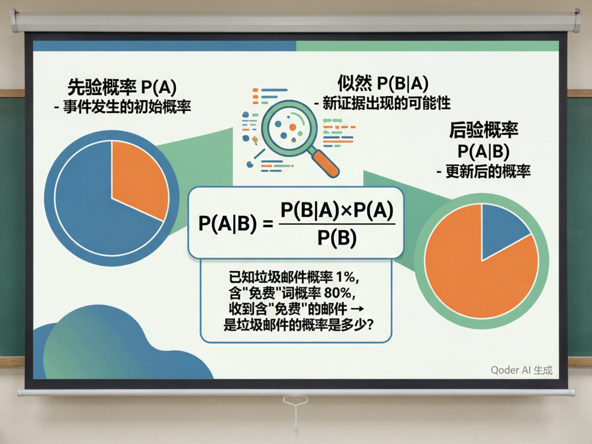
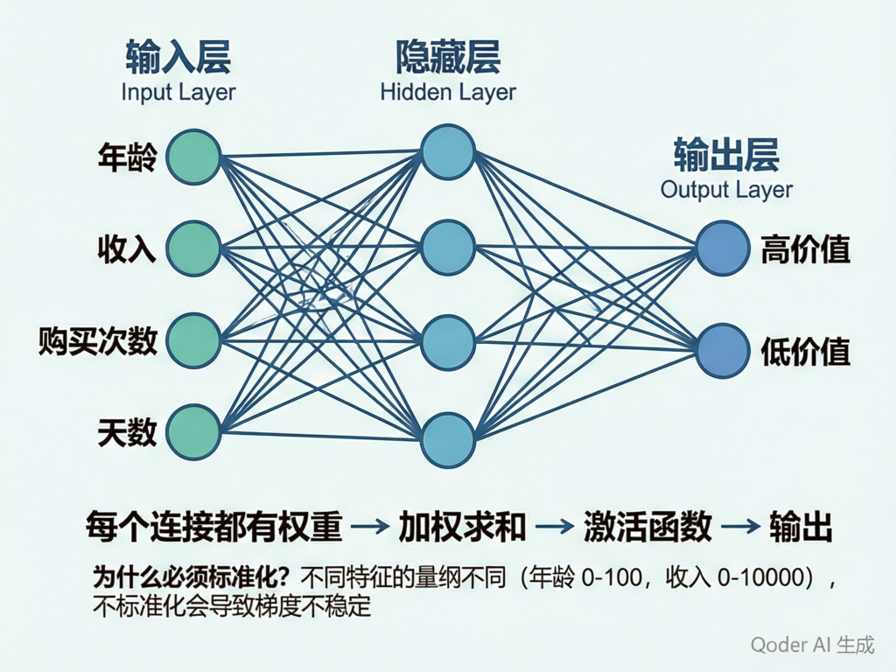
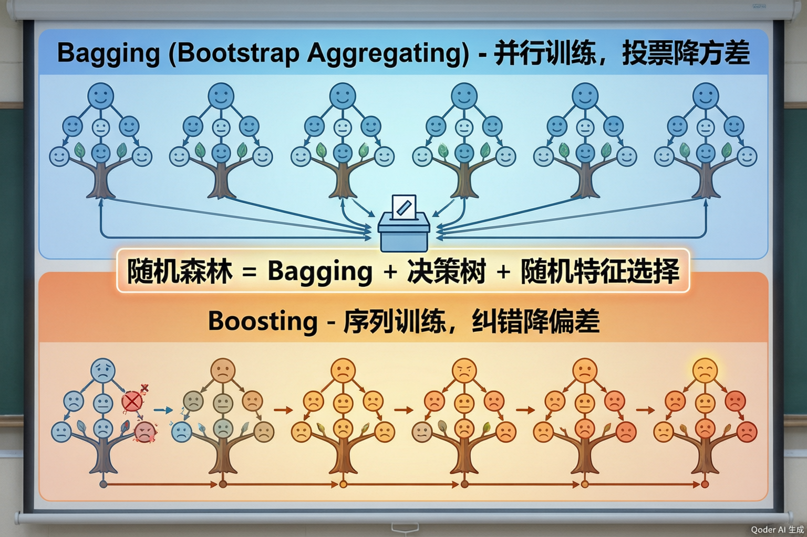
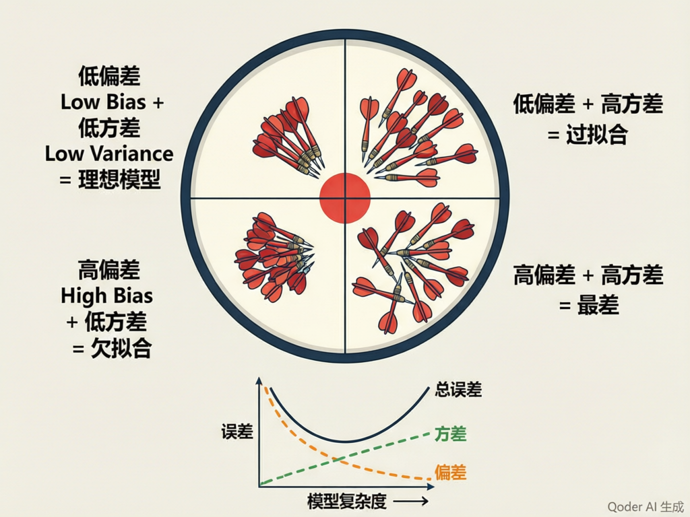

贝叶斯 · 神经网络 · 集成学习
从概率推理到深度学习，再到"三个臭皮匠顶个诸葛亮"——理解机器学习三大经典范式
一个故事：邮件是垃圾吗？
假设你知道，在所有邮件中，大约 1% 是垃圾邮件。有一天你收到一封邮件，里面出现了"免费领取"这个词。你查了历史数据发现：垃圾邮件中含有"免费领取"的概率是 80%，而正常邮件中含有"免费领取"的概率只有 5%。
那么问题来了：收到这封含"免费领取"的邮件后，它是垃圾邮件的概率变成了多少？
直觉告诉你应该高于 1%，但具体是多少？贝叶斯定理给出了精确答案。

= 0.80 × 0.01 / (0.80×0.01 + 0.05×0.99) ≈ 13.9%
似然 P(B|A)：如果事件 A 为真，新证据 B 出现的概率（垃圾邮件中出现"免费领取"的概率 80%）
后验概率 P(A|B)：看到新证据 B 之后，事件 A 发生的更新概率（约 13.9%）
从1个词到100个词——组合爆炸
现实中判断垃圾邮件不可能只看一个词。一封邮件可能有上百个特征词："免费""中奖""点击""限时"……要精确计算 P(免费,中奖,点击,…|垃圾)，就需要知道这些词在垃圾邮件中同时出现的概率。可能的组合数量是天文数字，数据根本不够用。
P(词₁,词₂,…,词ₙ|垃圾) = P(词₁|垃圾) × P(词₂|垃圾) × … × P(词ₙ|垃圾)
为什么这个假设"能用"？
虽然现实中特征很少完全独立，但在很多场景下，这个近似并不影响最终的分类排序。模型关心的是"哪一类概率更高"，而不是精确的概率值。只要排序对了，分类就是对的。
"朴素"的代价
如果特征之间有很强的关联（比如"下雨"和"地面湿"高度相关），模型会重复计算这部分信息，导致概率估计失真。这就是为什么朴素贝叶斯在特征高度相关的场景下效果会打折扣。
🧠 课堂小测
✅ 优点
• 训练极快——只需统计各类别下的特征频率，不需要迭代，时间复杂度 O(N)
• 可解释性好——你可以清楚看到每个词对分类结果的贡献
• 小数据也能用——参数少，不容易过拟合，样本需求远低于神经网络
• 天然处理多分类——不像某些算法需要特殊改造
• 对缺失数据不敏感——缺失的特征直接忽略即可
❌ 缺点
• 条件独立假设过强——现实中特征往往相关，"朴素"假设可能导致概率估计不准
• 对零概率敏感——某个词在训练集中没出现过，会直接让整个概率变成 0（需用拉普拉斯平滑）
• 不适合复杂非线性关系——当特征和目标之间关系复杂时（如图像分类），表现远不如神经网络
• 连续特征需离散化——原始的朴素贝叶斯处理连续数据效果不佳
垃圾邮件过滤
经典应用，训练快、效果稳定。大多数字邮箱都在用它。
新闻自动分类
根据文章内容自动归类到"体育""科技""娱乐"等频道。
情感分析
判断一段评论是正面还是负面。电商平台大量使用。
实时检测
速度快，适合需要毫秒级响应的在线分类场景。
什么是 MLP？
MLP（多层感知机，Multi-Layer Perceptron） 是最经典的前馈神经网络。它由一层层"神经元"堆叠而成，信息从输入层流入，经过隐藏层的变换，最终在输出层给出预测。每一个连接都有一个权重（weight），代表了这条连接"有多重要"。

n个特征
加权求和 → ReLU
加权求和 → ReLU
Softmax → 概率
② 激活函数（如 ReLU）：对加权求和的结果做一次非线性变换。如果没有激活函数，多层网络就会退化成单层线性模型，失去表达复杂关系的能力。
③ Softmax：输出层常用的激活函数，把原始分数转化为概率分布，所有类别的概率加起来等于 1。
一个直观的例子
假设你要用神经网络判断客户价值。两个特征：年龄（范围 0~100）和 年收入（范围 0~1,000,000）。如果不做标准化，收入这个特征的数值比年龄大几千倍，神经网络的权重更新会被收入"牵着鼻子走"，年龄几乎不起作用。
❌ 不标准化的后果
• 梯度更新不稳定：大数值特征主导梯度，小数值特征更新缓慢甚至停滞
• 收敛速度慢：优化器需要在"狭长"的损失函数表面上曲折前行，训练时间大幅增加
• 模型性能退化：部分特征实际上"被忽略"了，模型学不到完整的信息
✅ 标准化后的好处
• 所有特征处于同一数量级，权重更新公平高效
• 损失函数表面更"圆润"，梯度下降更快更稳
• 模型能充分利用每一个特征的信息
把每个特征变换为均值=0、标准差=1的分布
✅ 优点
• 拟合能力强——理论上只要隐藏层足够宽/深，MLP 可以逼近任意连续函数
• 自动特征学习——隐藏层会自动提取高阶特征组合，不需要人工设计
• 处理复杂关系——能捕捉特征之间非线性的、交互式的关系
• 支持在线学习——可以分批训练，适合数据量大的场景
❌ 缺点
• 黑箱不可解释——成千上万个权重交织在一起，你无法清楚解释"为什么模型说这个客户是高价值"
• 数据需求量大——参数多，小数据集容易过拟合
• 对超参数敏感——层数、每层神经元数、学习率、激活函数……调参工作量不小
• 训练时间长——相比决策树和朴素贝叶斯，训练速度慢得多
🧠 课堂小测
Bagging 的核心思想
Bagging（Bootstrap Aggregating，自助聚合） 的思路非常直觉：与其训练一个可能"过拟合"的强模型，不如训练多个"弱而不同"的模型，让它们投票决定最终答案。每个模型看问题的角度不同，综合起来就更稳定、更不容易犯错。
N个样本
有放回抽N次
× M轮
并行独立训练
最终预测
Bootstrap 自助采样
从原始数据中有放回地随机抽取 N 个样本，形成一个新的训练集。重复 M 次，得到 M 个不同的训练集。每个样本约有 63.2% 的概率被选中，未被选中的作为"袋外样本"（OOB）可用于验证。
并行训练
M 个模型之间没有任何依赖，可以同时训练。在多核 CPU 或 GPU 上可以大幅加速。
降方差
Bagging 主要降低的是方差（Variance）而非偏差（Bias）。直观理解：一个人判断可能偏激，十个人投票就更稳健。对决策树这种高方差模型效果尤其好。
Boosting 的核心思想
Boosting（提升法） 的哲学和 Bagging 完全不同。它不是让模型"并行投票"，而是让模型一个接一个地学习，每个新模型都重点关注上一个模型犯过的错误。就像一个学生反复做错题本——第一遍错了的题目，第二遍重点练习。
均匀权重训练
提高错样本权重
纠错训练
继续提权
好模型权重大
Bagging
• 模型之间并行，互不依赖
• 每个模型权重相同
• 主要降方差
• 代表性：随机森林
• 不容易过拟合
Boosting
• 模型之间串行，后者依赖前者
• 好模型权重更大
• 主要降偏差
• 代表性：AdaBoost, XGBoost
• 可能过拟合，需要早停

随机森林 = Bagging + 决策树 + 双重随机
随机森林在普通 Bagging 的基础上，加了一层随机：每次分裂节点时，只从随机选取的一小部分特征中选择最优分裂特征。通常分类问题取 sqrt(p) 个特征，回归问题取 p/3 个特征。
样本随机
每棵树用 Bootstrap 采样得到不同的训练集（和 Bagging 一样）。未抽中的约 37% 样本作为 OOB 验证。
特征随机
每个节点分裂时，只从随机选取的特征子集中选最优。这迫使每棵树"从不同角度看问题"，进一步降低树与树之间的相关性。
为什么效果好？
单棵决策树容易过拟合（方差大），但很多棵"弱相关"的树投票后，方差大幅降低。即使每棵树不太完美，整体却出奇地稳健。
随机森林：通过集成大幅降低方差，准确率稳定提升。缺点是可解释性下降——你不再能画出一棵"决策树"来解释模型，而是需要看"特征重要性"排名。
🧠 课堂小测
实验设计
使用同一份电商客户数据集（1000条，特征：月消费、购买次数、注册天数、最近购买距今；标签：高/低价值客户），统一按 7:3 划分训练集和测试集，分别训练四个模型并对比。
1000条
训练700/测试300
4个模型
同指标对比
四模型简介
| 模型 | 类型 | 关键参数 | 训练时间 | 可解释性 |
|---|---|---|---|---|
| 朴素贝叶斯 | 概率模型 | 拉普拉斯平滑 α=1 | 0.01s | ⭐⭐⭐⭐⭐ |
| 决策树 | 规则模型 | max_depth=5, Gini | 0.05s | ⭐⭐⭐⭐⭐ |
| MLP 神经网络 | 深度学习 | 2层×64神经元, ReLU | 2.3s | ⭐ |
| 随机森林 | 集成学习 | 100棵树, max_depth=8 | 1.8s | ⭐⭐⭐ |
性能对比汇总表
| 模型 | 准确率 | 精确率 | 召回率 | F1 | 训练耗时 |
|---|---|---|---|---|---|
| 朴素贝叶斯 | 91.3% | 82.5% | 76.0% | 79.1% | 0.01s |
| 决策树 (max_depth=5) | 94.7% | 87.5% | 84.0% | 85.7% | 0.05s |
| MLP 神经网络 | 96.3% | 90.2% | 90.0% | 90.1% | 2.3s |
| 随机森林 (100棵树) | 97.0% | 93.5% | 91.8% | 92.6% | 1.8s |
关键发现
1. 朴素贝叶斯垫底——不是算法不好，而是我们的特征之间有相关性（月消费和购买次数天然正相关），违背了"朴素"假设。在文本分类这种特征独立性更强的场景中它会好得多。
2. MLP 和随机森林接近——在这个"表格数据"任务上，精心调参的 MLP 和随机森林差距不大。但 MLP 需要标准化、调参成本更高，而且完全不可解释。
3. 随机森林最佳——在中等规模表格数据上，随机森林通常是最"省心"的选择：不需要标准化、不需要太多调参、效果好、有一定可解释性（特征重要性）。

偏差 Bias
模型预测的平均值与真实值之间的差距。高偏差 = 模型太简单，学不到真实规律（欠拟合）。
朴素贝叶斯通常偏差较高。
方差 Variance
模型在不同训练集上预测结果的波动程度。高方差 = 模型太敏感，换一批数据结果就大变（过拟合）。
单棵决策树通常方差较高。
不可约误差
数据本身的噪音，任何模型都无法消除的部分。即使完美模型也有误差上限。
比如客户的购买行为本身就存在随机性。
选型六维度框架
| 维度 | 朴素贝叶斯 | 决策树 | MLP | 随机森林 |
|---|---|---|---|---|
| 准确率 | ⭐⭐ | ⭐⭐⭐ | ⭐⭐⭐⭐ | ⭐⭐⭐⭐⭐ |
| 训练速度 | ⭐⭐⭐⭐⭐ | ⭐⭐⭐⭐⭐ | ⭐⭐ | ⭐⭐⭐ |
| 可解释性 | ⭐⭐⭐⭐⭐ | ⭐⭐⭐⭐⭐ | ⭐ | ⭐⭐⭐ |
| 小数据适应 | ⭐⭐⭐⭐⭐ | ⭐⭐⭐ | ⭐ | ⭐⭐⭐⭐ |
| 调参难度 | ⭐⭐⭐⭐⭐ | ⭐⭐⭐⭐ | ⭐⭐ | ⭐⭐⭐ |
| 非线性拟合 | ⭐ | ⭐⭐⭐ | ⭐⭐⭐⭐⭐ | ⭐⭐⭐⭐ |
📐 朴素贝叶斯 → 贝叶斯定理（先验×似然→后验）→ 条件独立假设 → 文本分类利器
↳ 🧠 MLP 神经网络 → 输入→隐藏→输出 → 激活函数 → 必须标准化 → 拟合强但黑箱
↳ 🎒 集成学习 → Bagging（并行投票降方差）→ Boosting（序列纠错降偏差）→ 随机森林（双重随机）
↳ 🧪 四模型对比 → 同数据同划分 → 随机森林最佳 → 但选型要综合考虑六维度
↳ 🎯 选型心智 → 偏差-方差分解 → 六维度框架 → NFL定理：没有银弹
1. 朴素贝叶斯用概率来分类，训练极快，适合文本；但"朴素"假设在特征高度相关的场景下吃亏。
2. MLP 神经网络拟合能力强，能处理复杂的非线性关系，但代价是黑箱不可解释和对数据量、标准化的严格要求。
3. 集成学习的核心哲学：Bagging 让多个模型投票降方差，Boosting 让模型串行纠错降偏差，随机森林把两者结合做到极致。
4. 没有最好的算法，只有最适合的算法。选型要综合考虑准确率、速度、可解释性、数据量、调参成本和业务场景（NFL定理）。
🧠 终极挑战
你现在已经理解了机器学习中三种截然不同的"学习范式"：概率驱动（贝叶斯）、连接主义（神经网络）、集体智慧（集成学习）。感兴趣的话，可以继续深入探索：深度学习（CNN/RNN）、梯度提升树（XGBoost/LightGBM）、贝叶斯网络等高级主题。